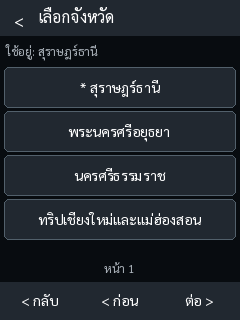

ESP32-2432S028R / CYD 2.8″
ติดตั้ง Survival Wiki
ภาษาไทยบน CYD
พกคู่มือเอาตัวรอด แผนที่ออฟไลน์ และเครื่องมือ GPS ไว้บนบอร์ดจอสัมผัส เริ่มติดตั้งเฟิร์มแวร์ผ่าน USB จากเบราว์เซอร์ได้เลย
กำลังตรวจเครื่องมือแฟรช…
สำรองการตั้งค่าก่อนแฟรช การเลือก Erase device จะลบข้อมูลในแฟลชของบอร์ด

QUICK START
จากเสียบสายถึงเปิดใช้งาน
- 01
ต่อบอร์ดผ่าน USB
ใช้สาย USB ที่ส่งข้อมูลได้ ต่อ CYD 2.8 นิ้วกับคอมพิวเตอร์ แล้วเปิดหน้านี้ใน Chrome หรือ Edge รุ่นเดสก์ท็อป
- 02
เลือกพอร์ตและติดตั้ง
กด เชื่อมต่อและแฟรช เลือกพอร์ต USB ของบอร์ด แล้วกด Install รอจนขึ้นว่าติดตั้งเสร็จและบอร์ดรีสตาร์ต
- 03
ใส่ SD Card
อัปเดตเนื้อหาโดยคัดลอก wiki/library/web จากชุดใหม่ลงการ์ดเดิม หรือติดตั้งใหม่โดยแตกชุด SD ลงรากการ์ด FAT32 ปิดบอร์ดก่อนใส่การ์ดแล้วเปิดใหม่
ดาวน์โหลดชุด SD ภาษาไทย ↓
ON THE BENCH
ถ้าติดตั้งไม่ผ่าน
ไม่พบพอร์ต USB ของบอร์ด
ลองใช้สายส่งข้อมูลหรือเปลี่ยนช่อง USB ปิด Serial Monitor และโปรแกรมที่เปิดพอร์ตอยู่ ถ้าระบบยังไม่เห็นพอร์ต ให้ตรวจไดรเวอร์ USB-to-Serial ของบอร์ด
พบพอร์ตแต่เชื่อมต่อไม่ได้
ถ้าบอร์ดมีปุ่ม BOOT และ RESET ให้กด BOOT ค้างไว้ กดแล้วปล่อย RESET จากนั้นปล่อย BOOT แล้วลองเชื่อมต่อใหม่
ต้องการแฟรชจากไฟล์ .bin
ดาวน์โหลดไฟล์ด้านบน แล้วใช้เครื่องมือแฟรช ESP32 เขียนไฟล์รวมที่ตำแหน่ง 0x0 วิธีนี้ใช้ได้เมื่อเบราว์เซอร์เปิดพอร์ตอนุกรมไม่ได้